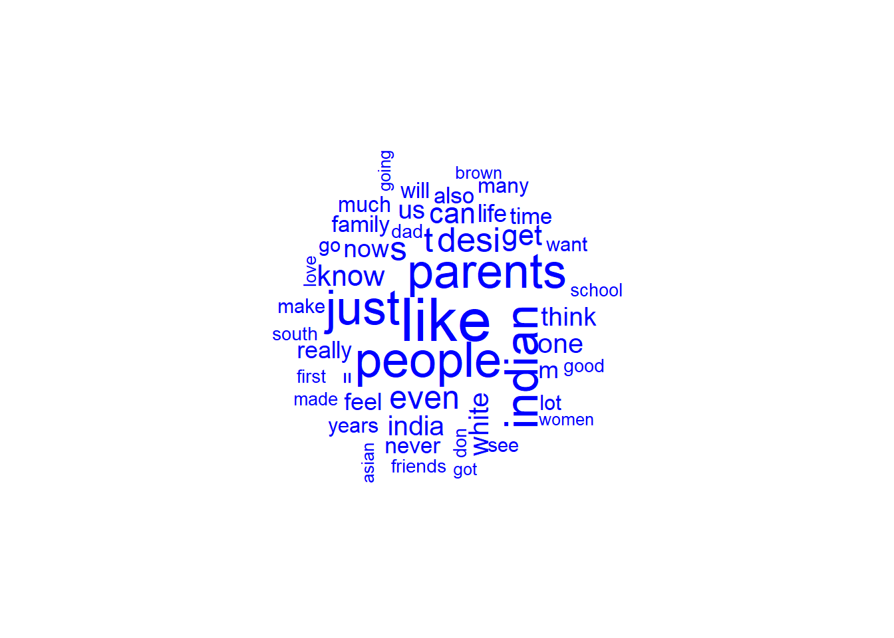

knitr::opts_chunk$set(echo = TRUE, warning = FALSE, message = FALSE)Post 2
post 2
saaradhaa
Working with Dataset
Refined Research Topic
When comparing different data sources for this blog post, I found my original research questions to be too broad. I am refining them to just focus on one community for now.
New Research Questions
- How have the values and concerns of South Asian Americans changed over time?
- Do older South Asian Americans align more with the honour culture prevalent in their home countries? Do younger South Asian Americans align more with the dignity culture prevalent in the USA?
This allows me to explore the cultural types described by Leung & Cohen (2011), but at a more manageable level and with greater depth.
Data Sources
To understand older South Asian Americans, I will be scraping data from the South Asian Oral History Project by the University of Washington. This comprises oral histories of South Asians who migrated to the US from the 1950s to the 1980s. Although there are only ~50 oral histories, each one is very detailed and seems to have at least 10 pages. Thus, a lot of valuable content can be extracted from these texts.
To understand younger South Asian Americans, I will be scraping posts and comments from the subreddit r/ABCDesis (“American Born Confused Desis”). Reddit is very popular in the US, with Americans comprising half of all Reddit Users. Reddit provides an optimal way of understanding communities of users with some common trait/interest - in this case, South Asian Americans. Reddit users also tend to fall in the 18-29 age range, representing South Asian Americans who migrated in the 1990s-2000s (and thus grew up in the Internet age).
For all code chunks below, I will document my thought process as comments in the code chunks, so that I can keep track of what I’m doing. I’ll also be commenting out some of the code so that it doesn’t re-run when I render (e.g., I don’t want to re-download my files again when I render the document).
Load Libraries
library(tidyverse)
library(pdftools)
library(stringr)
library(polite)
library(quanteda)
library(tidytext)
library(quanteda.textplots)
library(tm)
library(RedditExtractoR)Reading In PDF Data
I’ll examine the first 5 URLs to see if there’s a pattern I can use to download the PDFs.
https://digitalcollections.lib.washington.edu/digital/api/collection/saohc/id/117/page/0/inline/saohc_117_0
https://digitalcollections.lib.washington.edu/digital/api/collection/saohc/id/14/page/0/inline/saohc_14_0
https://digitalcollections.lib.washington.edu/digital/api/collection/saohc/id/107/page/0/inline/saohc_107_0
https://digitalcollections.lib.washington.edu/digital/api/collection/saohc/id/12/page/0/inline/saohc_12_0
https://digitalcollections.lib.washington.edu/digital/api/collection/saohc/id/95/page/0/inline/saohc_95_0
It looks like each participant is assigned a unique ID, but it doesn’t seem to follow a consistent format (e.g., 1 to 5).
# check - is the webpage scrapable?
bow("https://digitalcollections.lib.washington.edu/digital/api/collection/saohc/id/117/page/0/inline/saohc_117_0")<polite session> https://digitalcollections.lib.washington.edu/digital/api/collection/saohc/id/117/page/0/inline/saohc_117_0
User-agent: polite R package
robots.txt: 176 rules are defined for 1 bots
Crawl delay: 5 sec
The path is scrapable for this user-agent# yes it is. let's try to download the file.
# download.file("https://digitalcollections.lib.washington.edu/digital/api/collection/saohc/id/117/page/0/inline/saohc_117_0", "~/Downloads/test.pdf")It works! I’ll make a vector with all the URLs I need.
Unfortunately, I’ll have to create the vector manually, due to 2 reasons:
The URLs containing the PDFs cannot be found in the main page with the links to the interviews. I need to click on each interview page, then navigate to the pdf on that page (it’s in a different location for each interview page).
The main pages are also not scrapable - only each specific PDF link is scrapable.
# create vector with transcript PDF URLs. there are 50 URLs - the last 9 are from students, who can be classified as young south asians. these should be tagged separately when i read them into R.
urls <- c("https://digitalcollections.lib.washington.edu/digital/api/collection/saohc/id/117/page/0/inline/saohc_117_0", "https://digitalcollections.lib.washington.edu/digital/api/collection/saohc/id/14/page/0/inline/saohc_14_0", "https://digitalcollections.lib.washington.edu/digital/api/collection/saohc/id/107/page/0/inline/saohc_107_0", "https://digitalcollections.lib.washington.edu/digital/api/collection/saohc/id/12/page/0/inline/saohc_12_0", "https://digitalcollections.lib.washington.edu/digital/api/collection/saohc/id/95/page/0/inline/saohc_95_0", "https://digitalcollections.lib.washington.edu/digital/api/collection/saohc/id/92/page/0/inline/saohc_92_0", "https://digitalcollections.lib.washington.edu/digital/api/collection/saohc/id/110/page/0/inline/saohc_110_0", "https://digitalcollections.lib.washington.edu/digital/api/collection/saohc/id/63/page/0/inline/saohc_63_0", "https://digitalcollections.lib.washington.edu/digital/api/collection/saohc/id/57/page/0/inline/saohc_57_0", "https://digitalcollections.lib.washington.edu/digital/api/collection/saohc/id/66/page/0/inline/saohc_66_0", "https://digitalcollections.lib.washington.edu/digital/api/collection/saohc/id/181/page/0/inline/saohc_181_0", "https://digitalcollections.lib.washington.edu/digital/api/collection/saohc/id/294/page/0/inline/saohc_294_0", "https://digitalcollections.lib.washington.edu/digital/api/collection/saohc/id/23/page/0/inline/saohc_23_0", "https://digitalcollections.lib.washington.edu/digital/api/collection/saohc/id/291/page/0/inline/saohc_291_0", "https://digitalcollections.lib.washington.edu/digital/api/collection/saohc/id/30/page/0/inline/saohc_30_0", "https://digitalcollections.lib.washington.edu/digital/api/collection/saohc/id/103/page/0/inline/saohc_103_0", "https://digitalcollections.lib.washington.edu/digital/api/collection/saohc/id/72/page/0/inline/saohc_72_0", "https://digitalcollections.lib.washington.edu/digital/api/collection/saohc/id/61/page/0/inline/saohc_61_0", "https://digitalcollections.lib.washington.edu/digital/api/collection/saohc/id/10/page/0/inline/saohc_10_0", "https://digitalcollections.lib.washington.edu/digital/api/collection/saohc/id/76/page/0/inline/saohc_76_0", "https://digitalcollections.lib.washington.edu/digital/api/collection/saohc/id/300/page/0/inline/saohc_300_0", "https://digitalcollections.lib.washington.edu/digital/api/collection/saohc/id/297/page/0/inline/saohc_297_0", "https://digitalcollections.lib.washington.edu/digital/api/collection/saohc/id/185/page/0/inline/saohc_185_0", "https://digitalcollections.lib.washington.edu/digital/api/collection/saohc/id/38/page/0/inline/saohc_38_0", "https://digitalcollections.lib.washington.edu/digital/api/collection/saohc/id/175/page/0/inline/saohc_175_0", "https://digitalcollections.lib.washington.edu/digital/api/collection/saohc/id/63/page/0/inline/saohc_63_0", "https://digitalcollections.lib.washington.edu/digital/api/collection/saohc/id/81/page/0/inline/saohc_81_0", "https://digitalcollections.lib.washington.edu/digital/api/collection/saohc/id/42/page/0/inline/saohc_42_0", "https://digitalcollections.lib.washington.edu/digital/api/collection/saohc/id/121/page/0/inline/saohc_121_0", "https://digitalcollections.lib.washington.edu/digital/api/collection/saohc/id/120/page/0/inline/saohc_120_0", "https://digitalcollections.lib.washington.edu/digital/api/collection/saohc/id/179/page/0/inline/saohc_179_0", "https://digitalcollections.lib.washington.edu/digital/api/collection/saohc/id/99/page/0/inline/saohc_99_0", "https://digitalcollections.lib.washington.edu/digital/api/collection/saohc/id/26/page/0/inline/saohc_26_0", "https://digitalcollections.lib.washington.edu/digital/api/collection/saohc/id/33/page/0/inline/saohc_33_0", "https://digitalcollections.lib.washington.edu/digital/api/collection/saohc/id/45/page/0/inline/saohc_45_0", "https://digitalcollections.lib.washington.edu/digital/api/collection/saohc/id/220/page/0/inline/saohc_220_0",
"https://digitalcollections.lib.washington.edu/digital/api/collection/saohc/id/263/page/0/inline/saohc_263_0", "https://digitalcollections.lib.washington.edu/digital/api/collection/saohc/id/277/page/0/inline/saohc_277_0", "https://digitalcollections.lib.washington.edu/digital/api/collection/saohc/id/243/page/0/inline/saohc_243_0", "https://digitalcollections.lib.washington.edu/digital/api/collection/saohc/id/217/page/0/inline/saohc_217_0", "https://digitalcollections.lib.washington.edu/digital/api/collection/saohc/id/236/page/0/inline/saohc_236_0", "https://digitalcollections.lib.washington.edu/digital/api/collection/saohc/id/251/page/0/inline/saohc_251_0", "https://digitalcollections.lib.washington.edu/digital/api/collection/saohc/id/235/page/0/inline/saohc_235_0", "https://digitalcollections.lib.washington.edu/digital/api/collection/saohc/id/259/page/0/inline/saohc_259_0", "https://digitalcollections.lib.washington.edu/digital/api/collection/saohc/id/222/page/0/inline/saohc_222_0", "https://digitalcollections.lib.washington.edu/digital/api/collection/saohc/id/279/page/0/inline/saohc_279_0", "https://digitalcollections.lib.washington.edu/digital/api/collection/saohc/id/281/page/0/inline/saohc_281_0", "https://digitalcollections.lib.washington.edu/digital/api/collection/saohc/id/283/page/0/inline/saohc_283_0", "https://digitalcollections.lib.washington.edu/digital/api/collection/saohc/id/285/page/0/inline/saohc_285_0", "https://digitalcollections.lib.washington.edu/digital/api/collection/saohc/id/239/page/0/inline/saohc_239_0", "https://digitalcollections.lib.washington.edu/digital/api/collection/saohc/id/241/page/0/inline/saohc_241_0")
# remove any duplicates from the above vector, in case i've double-pasted something.
urls <- urls[!duplicated(urls)]
# let's download the files.
#download.file(urls, paste0("~/Desktop/2022_Fall/GitHub/Text_as_Data_Fall_2022/posts/Transcripts/", seq(1:50), ".pdf", sep=""))I’ve got all the PDFs, and now I’ll try to convert them into a corpus.
# list out all the pdfs - i shifted the folder to my working directory because it was not working otherwise!
pdfs <- list.files("~/Desktop/2022_Fall/GitHub/Text_as_Data_Fall_2022/posts/Transcripts", full.names = TRUE, pattern = "*.pdf")
# create a loop to extract texts.
text_a <- c()
text_s <- c()
for (i in 1:41)
{ print(i)
text_a[[pdfs[i]]] <- pdf_text(pdfs[i])}[1] 1Error in normalizePath(pdf, mustWork = TRUE): path[1]=NAfor (i in 42:50)
{ print(i)
text_s[[pdfs[i]]] <- pdf_text(pdfs[i])}[1] 42Error in normalizePath(pdf, mustWork = TRUE): path[1]=NA# convert to characters and save.
text_a <- unlist(text_a) %>% paste0(collapse=" ") %>% stringr::str_squish()
text_s <- unlist(text_s) %>% paste0(collapse=" ") %>% stringr::str_squish()
saveRDS(text_a, file="text_a.rds")
saveRDS(text_s, file="text_s.rds")
# when reading them into R in the future, i can use this command: readRDS(file="text_a.rds")
# cool. let's convert them to corpora.
corpus_a <- corpus(text_a)
corpus_s <- corpus(text_s)Analyzing PDF Data
# basic analysis: let's see how many sentences we have in each corpus.
sentences_a <- corpus_reshape(corpus_a, to = "sentences")
sentences_s <- corpus_reshape(corpus_s, to="sentences")There are ~43k sentences in the first corpus, and ~6k sentences in the second one.
Let’s make a basic wordcloud using a document feature matrix to see how the transcripts of older vs. younger south asians differ.
# create dfms.
corpus_a_edit <- corpus_a %>% dfm(remove = stopwords('english'), remove_punct = TRUE) %>%
dfm_trim(min_termfreq = 10, verbose = FALSE)
corpus_s_edit <- corpus_s %>% dfm(remove = stopwords('english'), remove_punct = TRUE) %>%
dfm_trim(min_termfreq = 10, verbose = FALSE)
# create wordclouds.
textplot_wordcloud(corpus_a_edit, max_words=50, color="purple")Error in textplot_wordcloud.dfm(corpus_a_edit, max_words = 50, color = "purple"): dfm must have at least one non-zero valuetextplot_wordcloud(corpus_s_edit, max_words=50, color="hotpink")Error in textplot_wordcloud.dfm(corpus_s_edit, max_words = 50, color = "hotpink"): dfm must have at least one non-zero valueThe purpose of generating the above wordclouds was to get a sense of the kinds of strings I need to clean up in the corpora. Still, it is interesting to see some of the meaningful words that show up: india(n), family, school, music, different.
Now let’s do some simple kwic manipulations - what are some differences in the uses of “culture” between adults vs. youth?
# get tokens.
tokens_a <- tokens(corpus_a, remove_punct = T, remove_numbers = T)
tokens_s <- tokens(corpus_s, remove_punct = T, remove_numbers = T)
# look at head.
head(kwic(tokens_a, pattern = c("culture"), window=10))head(kwic(tokens_s, pattern = c("culture"), window=10))Just from looking at the head, it looks like adults interviewed were more concerned with how to adjust to the change in culture from South Asia to the US, and how to transmit their culture to the next generation. Meanwhile, the youths talk about things that help them respect and connect with their culture.
Moving forward, I want to (1) add some metadata and (2) remove strings that don’t add meaning to analysis (e.g., “interview”, “university of washington”).
Reading In Reddit Data
I will be reading in the Reddit data using RedditExtractoR. It follows the guidelines and rate limits of the Reddit API, so only 1000 posts can be extracted per request.
I ideally want to analyse more than 1000 posts, so I’ll look into other methods of extracting Reddit data (potentially the PushShiftR package, or Python wrappers for the Reddit API). Most of the code below is commented out as it doesn’t need to be re-run.
# extract top posts of all time in the subreddit.
# content <- find_thread_urls(subreddit="ABCDesis",period="all",sort_by="top")
# look at its structure. there are 1000 posts extracted because that's the rate limit of Reddit API.
# str(content)
# the first row is "NA". let's remove that.
# content <- content[-1,]
# let's save the content object so that we don't have to keep re-running it. in the future, i can just re-load this.
# saveRDS(content, "content.rds")
content <- read_rds("content.rds")
# this took me pretty long to read in, then R hung and i lost it!
# url_content <- get_thread_content(content$url[1:100])
# url_content2 <- get_thread_content(content$url[101:200])
# url_content3 <- get_thread_content(content$url[201:300])
# url_content4 <- get_thread_content(content$url[301:400])
# url_content5 <- get_thread_content(content$url[401:500])
# url_content6 <- get_thread_content(content$url[501:600])
# url_content7 <- get_thread_content(content$url[601:700])
# url_content8 <- get_thread_content(content$url[701:800])
# url_content9 <- get_thread_content(content$url[801:900])
# url_content10 <- get_thread_content(content$url[901:1000])
# i don't know how to make this work. i want to combine all the lists into 1 list --> it's not working the way i want it to!
# url_contents <- c(url_content, url_content2, url_content3, url_content4, url_content5, url_content6, url_content7, url_content8, url_content9, url_content10)I’m having some trouble loading the comments (takes ~1h to load all of them for the 1000 posts, after which R hung). I’m going to do some basic analysis with the posts data first.
Analysing Reddit Data
Let’s first check the structure of our data.
str(content)'data.frame': 1000 obs. of 7 variables:
$ date_utc : chr "2019-03-22" "2019-03-09" "2019-01-28" "2022-05-21" ...
$ timestamp: num 1.55e+09 1.55e+09 1.55e+09 1.65e+09 1.61e+09 ...
$ title : chr "Indian kid won USA talent show, didn't see him here so here is Lydian Nadhaswaram's crowning moment" "My mom finally had the conversation with my dad: i want to marry a gora." "Hi it's Jai Wolf - I'll be releasing my debut album \"The Cure To Loneliness\" + Go on a headline tour this spring" "Daytimers (Bhangra Do's) of the 80's-90's UK undergroud rave scene. Would love to hear any stories!" ...
$ text : chr "Bit surprised we didn't see a post of him winning here, even more surprisingly it wasn't even mentioned in r/In"| __truncated__ "My father immigrated to the United States at 19 years old. He was raised in a small village in Punjab, had a ve"| __truncated__ "Hey there fellow desis - you might know me from my song \"Indian Summer\". \n\nI'm releasing my debut album \"T"| __truncated__ "" ...
$ subreddit: chr "ABCDesis" "ABCDesis" "ABCDesis" "ABCDesis" ...
$ comments : num 28 105 41 16 150 166 31 10 18 136 ...
$ url : chr "https://www.reddit.com/r/ABCDesis/comments/b43kot/indian_kid_won_usa_talent_show_didnt_see_him_here/" "https://www.reddit.com/r/ABCDesis/comments/az5372/my_mom_finally_had_the_conversation_with_my_dad_i/" "https://www.reddit.com/r/ABCDesis/comments/aktpvt/hi_its_jai_wolf_ill_be_releasing_my_debut_album/" "https://www.reddit.com/r/ABCDesis/comments/uucqhx/daytimers_bhangra_dos_of_the_80s90s_uk_undergroud/" ...It’s a dataframe with 7 columns: date_utc, title, text and comments will be interesting to analyse.
range(content$date_utc)[1] "2015-03-05" "2022-10-27"The top 1000 posts in the subreddit span 7 years, from 2015 to 20222.
mean(content$comments)[1] 87.06That’s ~86 comments per post, which means I was trying to load ~86,000 comments in total in the previous code chunk - no wonder it took so long. Let’s try to convert the title and text columns into a corpus.
# put the 2 columns together and make it easier to read.
content <- unite(content, "title_text", c(title, text), sep=" ")
# create corpus.
reddit_corpus <- corpus(content$title_text)
reddit_corpus <- corpus_reshape(reddit_corpus,to="sentences")
# save object.
saveRDS(reddit_corpus, "reddit_corpus.rds")Let’s make a wordcloud.
reddit_corpus_edit <- reddit_corpus %>% dfm(remove = stopwords('english'), remove_punct = TRUE) %>% dfm_trim(min_termfreq = 10, verbose = FALSE)
textplot_wordcloud(reddit_corpus_edit, max_words=50, color="blue")
From the wordcloud, the Reddit data seems much cleaner than the PDF data. India(n) and family comes up as frequently used, similar to the oral histories. There’s also frequent usage of the words “desi” and “white”.
Let’s also look at the use of the word “culture”, similar to what I did for the oral histories.
head(kwic(reddit_corpus, pattern = c("culture"), window=10))There seems to be a lot more detail in the Reddit data when looking at the windows around the word “culture”.
Moving Forward
After finalizing my datasets, I want to do topic modelling and extract personal values from the corpora using the Personal Values Dictionary.